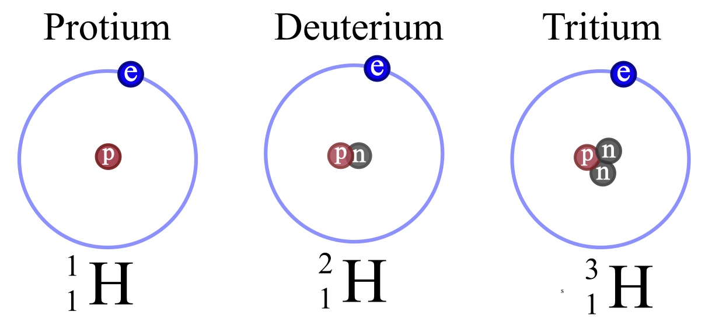
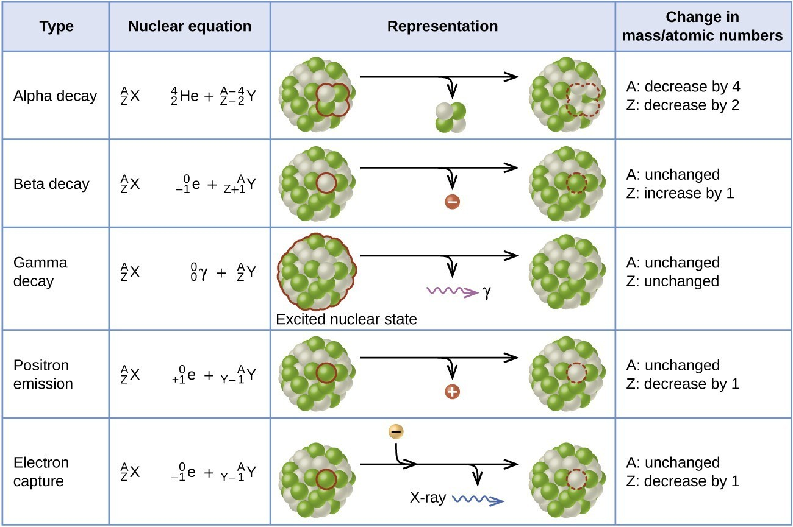
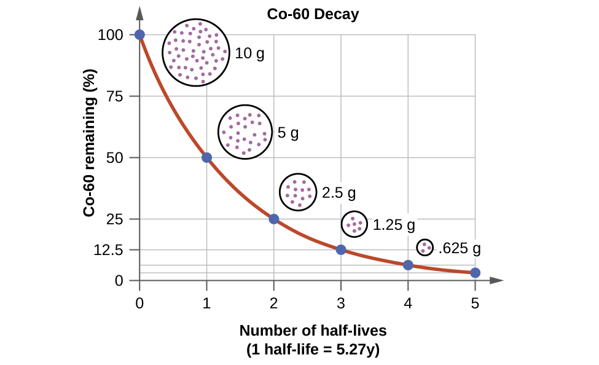
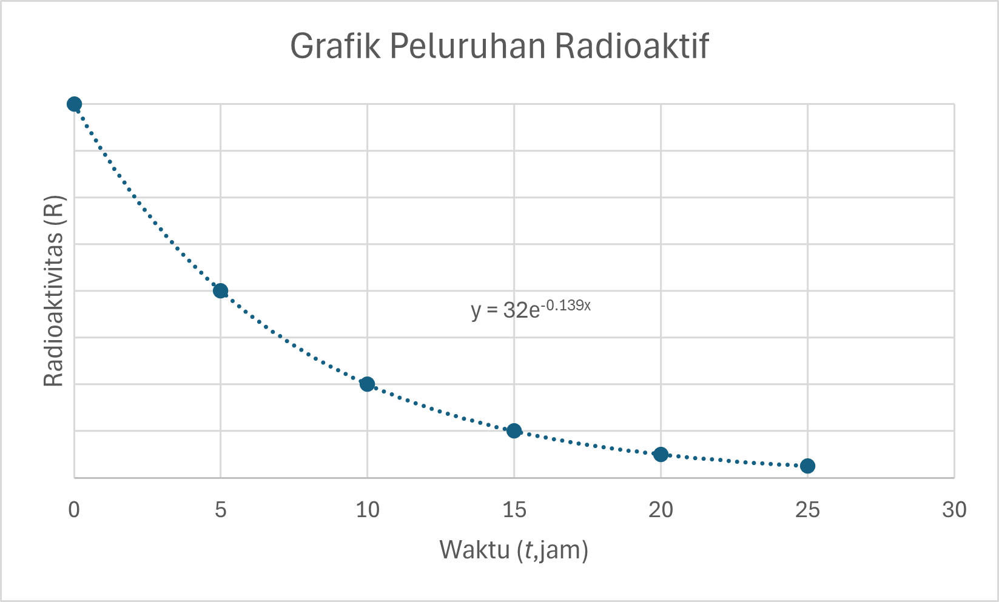

# Fisika Inti dan Radioaktivitas - Massa Atom, Isotop - Proton, Neutron, Nukleon - Energi Ikat dan Defek Massa - Reaksi Inti dan Radioaktivitas - Peluruhan Radioaktif --- ### Massa Atom - Selama ini perhatian kita pada atom terbatas pada perilaku elektron yang berada di kulit atom. Inti atom hanya kita lihat sebagai sesuatu yang bermassa dan bermuatan positif saja. - Nyatanya ada banyak hal penting dalam inti atom, salah satunya adalah massa --- - Massa inti diukur dengan spektrometer massa. - Massa atom didefinisikan sebagai massa atom netral (tidak bermuatan). - Massa atom sering kali dinyatakan dalam satuan massa atom *sma*. ###### $$1\space sma=1,6604\times10^{-27}kg$$ - energi 1 sma setara dengan 931,48 MeV - Atom karbon yang memiliki nomor massa 12, massanya persis sama dengan *12 sma* --- ### Massa berbagai Isotop Seng (Zn) | Nomor Massa | Massa atom (sma) | Kelimpahan di alam (%) | | --- | --- | --- | | 64 | 63,92914 | 48,89 | | 66 | 65,92605 | 27,81 | | 67 | 66,92715 | 4,11 | | 68 | 67,92486 | 18,56 | | 70 | 69,92535 | 0,62 | --- <img src="../resources/images/nuc01.png" > --- - Massa atom yang umumnya tertera dalam tabel periodeik unsur mengacu pada rerata massa dari setiap unsur. - Atom Hidrogen, misalnya, memiliki tiga isotop (*Hidrogen, deuterium, dan tritium*), meskipun dua isotop yang lain hanya terdapat sedikit sekali di alam (0,0015%). - Inti dengan massa paling ringan adalah inti yang hanya terdiri dari satu proton, yang massanya: ###### $$m_P=1,0072766\space sma=1,6725\times10^{-27}kg$$ --- ### Neutron - Neutron ditemukan sekitar tahun 1932. - Neuton bukanlah partikel stabil ketika berada di luar inti atom. Dalam 15,5 menit, neutron akan meluruh menjadi proton, elektron dan anti neutrino. - Massa Neutron sedikit lebih berat dari proton ###### $$m_n=1,0086654\space sma=1,6748\times10^{-27}kg$$ --- - Berbagai variasi dari satu unsur yang sama disebut sebagai *isotop*. Sementara *nuklida* menunjuk pada species tertentu dari inti (kelihatan dari jumlah proton dan neutronnya). - Sebuah *nuklida* dilambangkan dengan simbol: ###### $$\ce{\LARGE{^A_Z X}}$$ - *A* = Nomor massa (jumlah proton + neutron) - *Z* = Nomor atom (jumlah proton) - *N* = Jumlah neutron (A-Z) - *X* = Simbol kimia unsur ---  - Tiga jenis isotop hidrogen --- ### Nukleon - Istilah nukleon dipakai untuk menyebut baik proton maupun neutron. Karena itu nomor massa (*A*) menunjuk pada jumlah nukleon. - Berbagai macam isotop dimungkinkan karena di dalam inti atom terdapat proton dan neutron. Isotop dari unsur yang sama memiliki jumlah proton sama, tetapi jumlah neutron berbeda. --- ### Energi Ikat - Sebuah atom stabil memiliki massa yang lebih kecil dari jumlah massa partikel-partikel pembentuknya. - Atom *deuterium* **$\ce{^2_1 H}$**, misalnya, memiliki massa *2,014102 sma*. Padahal massa atom hidrogen **$\ce{^1_1 H}$** ditambah massa neutron sama dengan: ###### $$\begin{split}m_H+m_n&=1,007825\space sma+1,00866\space sma\cr &=2,016490\space sma\end{split}$$ - Ada selisih sebesar *0,002388 sma* --- * Inti atom deuterium terdiri dari satu proton dan satu neutron. Sementara **$\ce{^2_1 H}$** dan **$\ce{^1_1 H}$** sama-sama memiliki satu elektron orbital. * Jelas bahwa selisih massa dikarenakan ikatan antara proton dan neutron untuk membentuk deuteron (deuteron=inti atom deuterium). * Massa 0,002388 sma setara dengan ###### $$0,002388\space sma\times 931,48\space MeV=2,22\space MeV$$ - Dalam pembentukan deuteron dari proton dan neutron bebas, dilepaskan energi sebesar **2,22 MeV** --- #### Defek Massa - Dalam pemecahan deuteron menjadi proton dan neutron bebas, dibutuhkan energi sebesar **2,22 MeV** - Selisih antara massa inti dan jumlah massa partikel pembentuknya disebut **defek massa** *(defect mass)* - Energi yang setara dengan massa defek disebut **energi ikat**. --- ###### $$\Delta m=(Zm_p+(A-Z)m_n)-m_{inti}$$ - Keterangan: * *A* = Nomor massa (jumlah proton + neutron) * *Z* = Nomor atom (jumlah proton) * *Δm* = defek massa * *m<sub>p<sub>* = massa proton * *m<sub>n<sub>* = massa neutron * *N = (A-Z)* = Jumlah neutron --- #### Energi Ikat - Energi ikat menjadi ukuran stabilitas inti. Energi ikat muncul dari gaya ikat inti yang menyatukan nukleon (proton + elektron) untuk membentuk inti. - Energi ikat bervariasi besarnya, mulai dari 2,22 MeV, yakni energi ikat deuteron, hingga 1,640 MeV, yakni energi ikat **$\ce{^{209}_{83}Bi}$**, yang merupakan atom stabil terberat. --- - Energi ikat per nukleon dapat dihitung dengan membagi energi ikat nukleon dengan jumlah nukleon. ###### $$E_n=\frac E A$$ - Keterangan: * *A* = Nomor massa (jumlah proton + neutron) * *E* = Energi ikat inti (MeV) * *E<sub>n<sub>* = Energi ikat per nukleon (MeV) --- - Sementara energi ikat dapat dihitung dari defek massa ###### $$E=\Delta m\times931,48\space MeV$$ Keterangan: * *Δm* = defek massa * *E* = Energi ikat inti (MeV) --- - Dalam inti atom terdapat gaya gravitasi serta gaya elektrostatis, meskipun gaya gravitasi dapat diabaikan terhadap gaya elektrostatis. - Jadi bagaimana inti atom dengan muatan-muatan positif itu tidak saling tolak menolak melainkan tetap bersatu di dalam inti? - Ada gaya yang disebut sebagai gaya ikat inti yang menyatukan nukleon-nukleon. --- ### Reaksi Inti dan Radioaktivitas - Meskipun ada gaya yang menyatukan inti, tidak berarti bahwa inti atom tidak dapat berubah. Banyak inti tidak stabil dan secara spontan mengubah komposisi merema melalui proses yang disebut **peluruhan radioaktif**. - Selain itu, semua jenis inti dapat berubah lewat **reaksi dengan nukleon atau inti lain** yang menabraknya. --- #### Peluruhan Radioaktif - Suatu inti yang tidak stabil akan meluruh untuk mencapai konfigurasi yang stabil, atau konfigurasi yang menuju kestabilan. - Laju peluruhan sebuah inti radioaktif disebut **aktivitas** radioaktif. ###### $$R=-\frac{\mathrm {d}N}{\mathrm {d}t} $$ Keterangan: * *R* = aktivitas radioaktif/radioaktivitas (Bq) * *N* = jumlah inti dari atom sampel --- - Tanda minus dipakai agar nilai R selalu positif, karena nilai N akan berkurang akibat peluruhan. - Satuan radioaktivitas adalah *becquerel*, dari nama Henri Becquerel, yang menemukan gejala ini pada 1896. - **$1\space becquerel=1\space Bq= 1\space peluruhan/detik$** - Satuan lain yang dipakai adalah *curie*, dari nama Pierre dan Marie Curie. - **$1\space curie=1\space Ci= 3,70\times10^{10}\space bq=37\space GBq$** ---  Lima jenis peluruhan radioaktif ---  Waktu Paruh --- #### Waktu Paruh - Penelitian menunjukkan bahwa grafik radioaktivitas turun secara exponensial. Untuk setiap jenis isotop, ada yang disebut sebagai **waktu paruh**, yakni waktu yang diperlukan oleh isotop itu untuk meluruh menjadi setengah dari semula. - Waktu paruh ada yang singkat (hitungan milisekon) ada pula yang lama (jutaan tahun) ---  --- Grafik di atas dapat dinyatakan dalam: ###### $$R=R_0e^{-\lambda t} $$ Keterangan: * *R* = aktivitas radioaktif/radioaktivitas (Bq) * *λ* = konstanta peluruhan, nilainya berbeda untuk setiap radioisotop. * *t* = waktu --- - Waktu paruh (T<sub>½</sub>) adalah waktu ketika R separuh dari R<sub>0</sub>. Sehingga $$R=R_0e^{-\lambda t} $$ $$\frac 1 2 R_0=R_0e^{-\lambda T_{1/2}} $$ $$e^{\lambda T_{1/2}}=2 $$ ###### $$T_{1/2}=\frac{\ln 2}{\lambda}=\frac{0,693}{\lambda} $$ --- - Jika sebuah sampel mengandung jumlah inti yang belum meluruh sejumlah **N**, jumlah **dN** yang akan meluruh dalam waktu **dt** adalah hasil kali **λ** dengan **N** $$\mathrm {d}N=-N\lambda \mathrm {d}t$$ $$\frac{\mathrm {d}N}{N}=-\lambda \mathrm {d}t$$ --- $$\int^N_{N_0}\frac{\mathrm {d}N}{N}=-\lambda \mathrm \int^t_{0}{d}t$$ $$\ln N-\ln N_0=-\lambda t$$ ###### $$N=N_0e^{-\lambda t} $$ Keterangan: * *N* = sisa inti yang belum meluruh * *N<sub>0<sub>* = jumlah inti mula-mula --- #### *Carbon Dating/Radioactive Dating* - Dengan adanya peluruhan radioaktif, dimungkinkan cara untuk menentukan umur batuan atau fosil. Perbandingan antara jumlah sebuah nuklida dan hasil peluruhannya dipakai untuk kepentingan ini. - Isotop yang paling sering dipakai adalah isotop karbon **$\ce{^{14}_{6}C}$** yang sering disebut sebagai radiokarbon. Radiokarbon meluruh menjadi **$\ce{^{14}_{7}N}$** dengan waktu paruh sekitar 5.760 tahun. --- - Semua makhluk hidup mengandung campuran **$\ce{^{12}_{}C}$** dan **$\ce{^{14}_{}C}$** dalam jumlah yang selalu sama. - Setelah mati, tidak ada lagi asupan radiokarbon, sehingga radiokarbon yang ada dalam makhluk hidup itu akan meluruh menjadi **$\ce{^{14}_{7}N}$**. Dengan membandingkan jumlah **$\ce{^{12}_{}C}$** dan **$\ce{^{14}_{}C}$**, dapat diketahui umur sebuah fosil. --- ### Reaksi Inti #### Energi Reaksi - Dalam reaksi inti, yang terlibat bukan hanya elektron valensi, tetapi juga inti atom. - Reaksi inti terdiri dari dua tahap. Tahap pertama, sebuah partikel menumbuk inti yang menjadi target dan keduanya membentuk inti gabungan. --- - Inti gabungan memiliki nomor massa dan nomor atom sama dengan jumlah nomor massa dan nomor atom kedua partikel. - Tahap kedua, inti gabungan akan meluruh (bisa dengan cara yang sama atau berbeda), tergantung pada energi eksitasinya. --- Reaksi inti yang menghasilkan inti gabungan **$\ce{^{14}_{7}N}$*** | Partikel Penyusun dan Hasil | Energi | | --- | --- | | $\ce{^{13}_{7}N + ^{1}_{0}n->^{14}_{7}N}$ | 10,5 MeV | | $\ce{^{13}_{6}C + ^{1}_{1}H->^{14}_{7}N}$ | 7,5 MeV | | $\ce{^{12}_{6}C + ^{2}_{1}H->^{14}_{7}N}$ | 10,3 MeV | | $\ce{^{11}_{6}C + ^{3}_{1}H->^{14}_{7}N}$ | 22,7 MeV | | $\ce{^{11}_{5}B + ^{3}_{2}He->^{14}_{7}N}$ | 20,7 MeV | | $\ce{^{10}_{5}B + ^{4}_{2}He->^{14}_{7}N}$ | 11,6 MeV | --- - Sebuah reaksi inti yang ditulis dengan persamaan reaksi: ###### $$\ce{A + B->C + D}$$ mempunyai nilai Energi E yang besarnya ###### $$E=[(m_A+m_B)-(m_C+m_D)]c^2$$ ###### $$E=(m_A+m_B-m_C-m_D)c^2$$ - Jika, nilai E positif, berarti reaksinya eksotermis (melepas energi). Sebaliknya, bila E negatif, reaksinya endotermis (membutuhkan energi). --- ### Reaksi Fisi - Salah satu jenis reaksi inti adalah fisi (pemecahan), di mana inti-inti berat (A > 200) pecah menjadi dua inti yang lebih ringan. - Inti-inti hasil reaksi fisi disebut sebagai **pecahan fisi**. Biasanya ukurannya tidak sama besar. - Contoh reaksi fisi. ###### $$\ce{^{235}_{92}U + ^{1}_{0}n -> ^{236}_{92}U->^{140}_{54}Xe + ^{94}_{38}Sr + ^{1}_{0}n + ^{1}_{0}n}$$ --- - **$\ce{^{236}_{92}U}$** jauh lebih sulit untuk pecah atau mengalami fisi karena dibutuhkan energi di atas 1 MeV. Sementara **$\ce{^{235}_{92}U}$** lebih mudah. Hanya dibutuhkan 1 neutron untuk memicu reaksi. - Reaksi itu sendiri juga menghasilkan 2 neutron. - Dimungkinkan suatu reaksi berantai, sehingga dengan satu kali picu, terjadi rentetan reaksi sampai $\ce{^{235}_{92}U}$ habis. - Ini dapat dipakai untuk sumber energi yang efisien → Reaktor nuklir. --- - Catatan: kalau jumlah neutron terlalu sedikit, reaksi akan berhenti. Kalau pas, reaksi akan berlangsung konstan dan energi dapat dipanen secara kontinyu. Kalau terlalu banyak neuton, reaksi menjadi terlalu cepat dan tidak terkendali. --- #### Energi Termonuklir - Reaksi eksotermis yang terjadi pada matahari dan bintang lainnya, dan merupakan sumber semua energi di alam raya, adalah fusi inti hidrogen menjadi inti helium. - Ini dapat terjadi melalui dua proses, siklus proton-proton dan siklus karbon. - Siklus proton-proton: kombinasi dua proton menghasilkan deuteron, positron, dan neutrino. Deuteron bergabung dengan proton lain, membentuk inti $\ce{^{3}_{2}He}$. Dua inti $\ce{^{3}_{2}He}$ akan bereaksi membentuk inti $\ce{^{4}_{2}He}$ --- - Siklus proton-proton: ###### $$\ce{^{1}_{1}H + ^{1}_{1}H -> ^{2}_{1}H + e+ + \nu }$$ ###### $$\ce{^{1}_{1}H + ^{2}_{1}H -> ^{3}_{2}He + \gamma }$$ ###### $$\ce{^{3}_{2}He + ^{3}_{2}He -> ^{4}_{2}He + ^{1}_{1}H + ^{1}_{1}H }$$ - Total energi yang dihasilkan : 24,7 MeV --- - Siklus karbon: ###### $$\ce{^{1}_{1}H + ^{12}_{6}C -> ^{13}_{7}N -> ^{13}_{6}C + e+ + \nu }$$ ###### $$\ce{^{1}_{1}H + ^{13}_{6}C -> ^{14}_{7}N + \gamma }$$ ###### $$\ce{^{1}_{1}H + ^{14}_{7}N -> ^{15}_{8}O -> ^{15}_{7}N + e+ + \nu }$$ ###### $$\ce{^{1}_{1}H + ^{15}_{7}N -> ^{12}_{6}C + ^{4}_{2}He }$$ - Total energi yang dihasilkan : 24,7 MeV